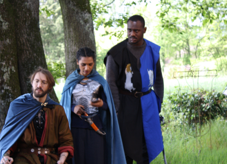
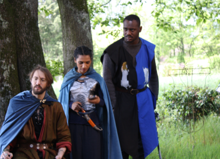

COURT-

MÉTRAGES
Chevalier végan
2021
En l’an 1252, un seigneur cherche à étendre son territoire de façon pacifique, pour cela il invite le seigneur voisin à des négociations. Cependant des différences culturelles majeures vont rendre cette entreprise bien compliquée.

 


Du miel cantique
2021


Un concours, un thème : 2050.
Pour y répondre, le collectif Brainwatch a fait le choix d’un zapping télévisé un peu particulier.
Retrouvez vos films préférés, vos émissions favorites et des programmes divers, le tout revisité avec l’humour Brainwatch.
Jeu d'Amour
2021


Concours : Nikon Festival 2021
Dans une société régie par les réseaux sociaux, trouver l'amour est compliqué. Surtout quand la personne en face en oublie l'aspect humain de ses rencontres.
Un jeu d'amour 2.0, où l'on oublie aussi vite qu'on match.